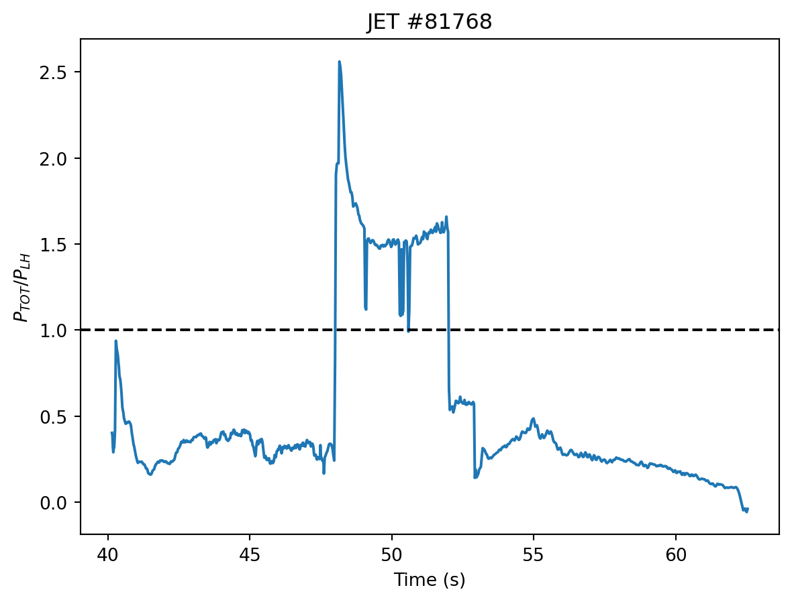
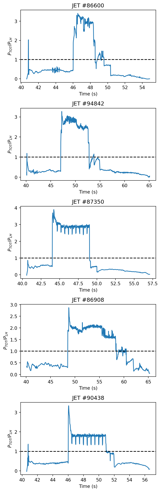

Some Automating
What do we want to automate
Three things:
- Finding of H-Mode
- Power threshold
- Steady-states
- Tricky
- ELM timings
- Also Tricky
- Curve fitting
- Bayesian :–)
1. Finding H-mode
The amount of power needed to enter H-mode is commonly described as the L-H threshold, or \(P_{LH}\).
An example of a scaling law derived in terms of machine parameters is given in1:
\[P_{\text{LH}} [\text{MW}] = 2.15e^{\pm 0.107} n_{e20}^{0.728 \pm 0.037} B_T^{0.772 \pm 0.031} a^{0.975\pm 0.08} R^{0.999\pm 0.101 }\] where \(B_T\) [T], \(n_e\) [\(10^{20}\) m \(^{-2}\)], \(a\) [m], \(R\) [m] are the magnitude of the toroidal magnetic field, line averaged electron density, major and minor plasma radius, respectively. The shaping parameters are sometimes refered to as \(S\), or parameterized as the surface area. This can be intuitively thought of as given some volume of plasma, with surface area \(S\) and density \(n\), that is confined by a magnetic field \(B\), there exists some amount of power needed to excited it to pass into a new regime.
Thus, we are looking for the times where \(P_\text{TOT} \geq P_{\text{LH}}\), or \(\frac{P_\text{TOT}}{P_{\text{LH}}} \geq 1.0\)

But how to get the time windows for H-mode?
- Easy (but not entirely accurate): \(P_{TOT} >= P_{LH}\)
- This picks up the L-H transition, but not the back transition, so we will need to find the charactaristic time for L-H transition
- ??: use a change-point detection algorithm to find change points in the martin scaling?
Details on processing
- Well to even plot the scaling law, all the data needs to be on the same axis…
- Interpolate the lowest frequency sampled basis
- Possibly need to interpolate the power parameters themselves also
2. Finding steady states
Idk yet
3. ELM Timings
Here we have some attempts by others2
The algorithm implemented in2 is simplified as follows:
- ‘up-sample’ the signals
- DCT of signal, append 0s up to the highest sampling frequency range for each signal used
- Inverse DCT back to real space
- take first derivative ‘up-sampled’ signal.
- From each differentiated signal, the \(1-\nu\) largest points are labeled as canidates, where \(\nu\) is a percentile filter for thresholding (optimal 0.997)
scipy.signal.find_peaks
References
1.
Martin, Y. R. & Takizuka, T. Power requirement for accessing the h-mode in ITER. Journal of Physics: Conference Series 123, 012033 (2008).
2.
O’Shea, F. H., Joung, S., Smith, D. R. & Coffee, R. Automatic identification of edge localized modes in the DIII-d tokamak. (2022) doi:10.48550/ARXIV.2212.08745.